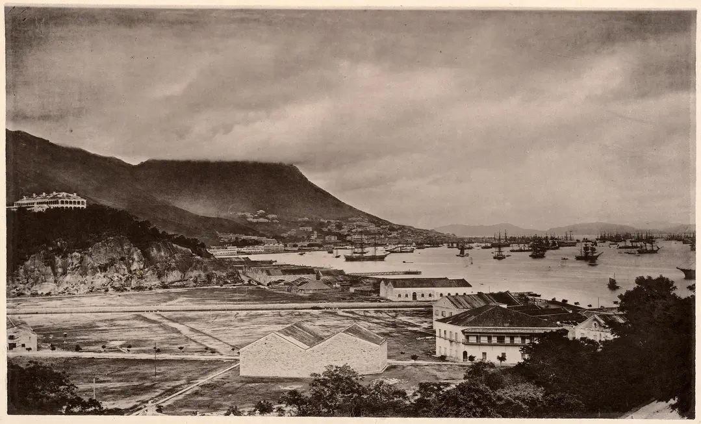
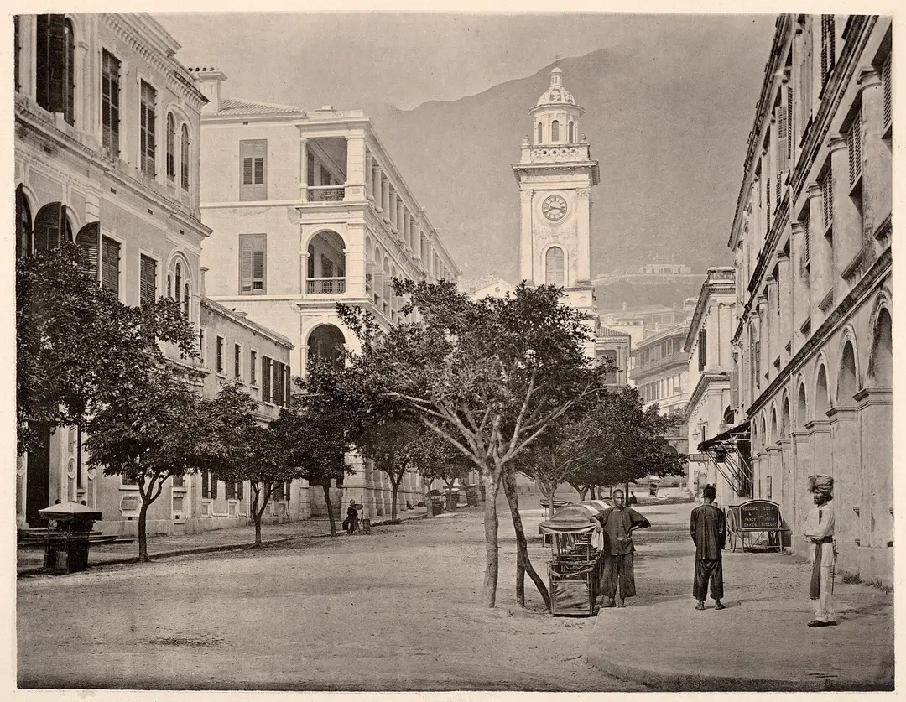
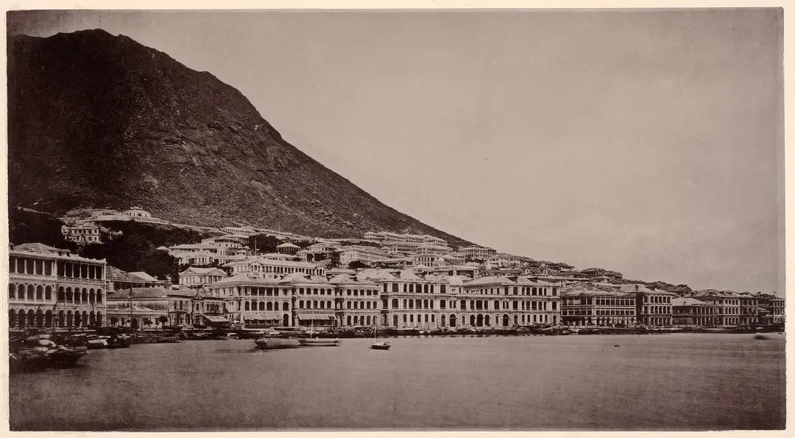
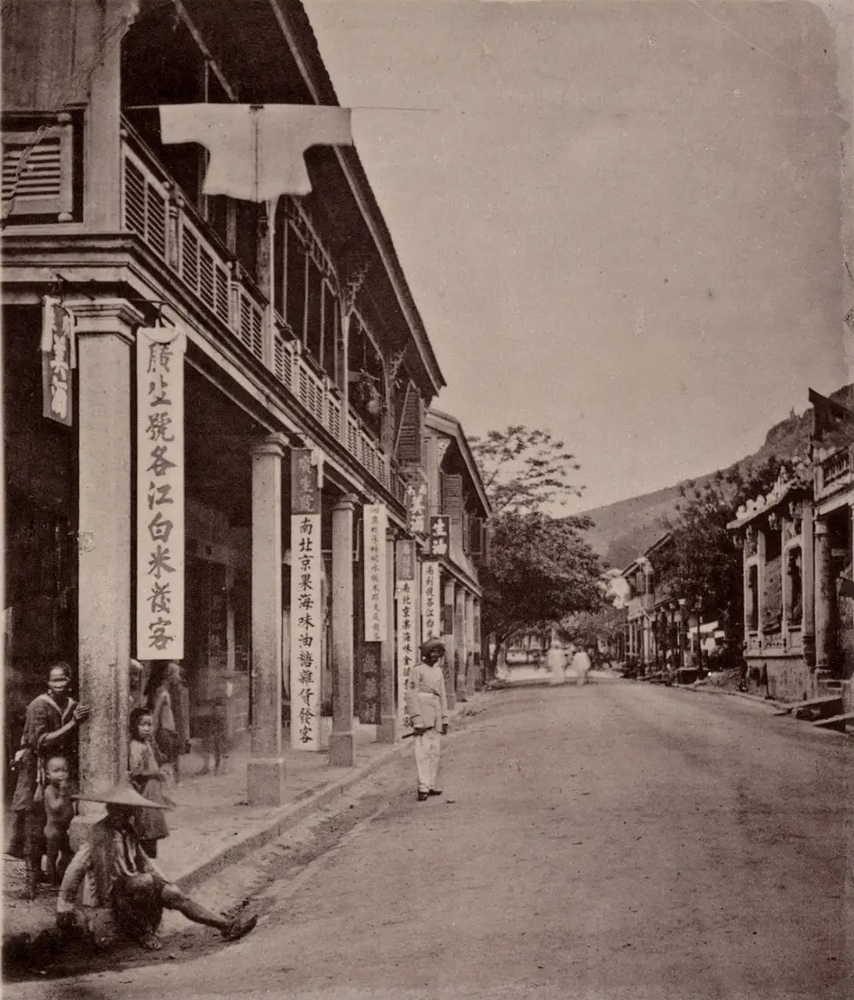
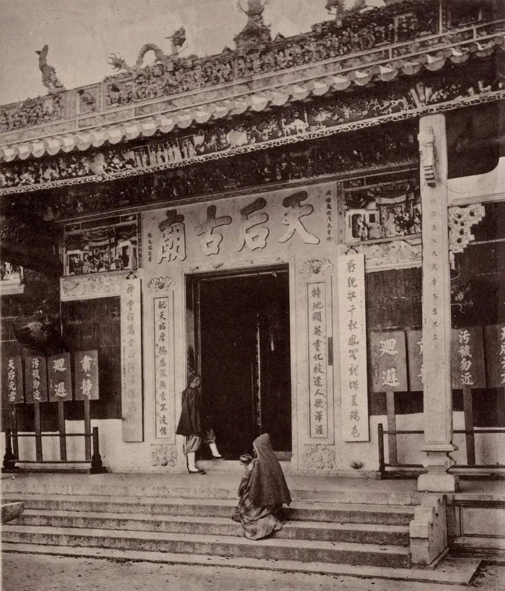

Nhiếp ảnh gia John Thomson để lại tác phẩm về ngân hàng, phu xe, nhà sư, diễn viên ở Hong Kong thế kỷ 19.
Hong Kong năm 1868.
Theo Photo 100, John Thomson (1837-1921) là nhiếp ảnh gia tiên phong người Scotland, đồng thời là nhà địa lý học, lữ hành gia. Ông từng làm việc ở xưởng chế tạo thiết bị quang học trước khi chu du thế giới. Năm 1862, John Thomson lần đầu đến châu Á, bắt đầu hành trình hơn 10 năm khám phá, ghi lại hình ảnh nhiều quốc gia, vùng lãnh thổ.
Tháp đồng hồ, chụp khoảng năm 1870. Tòa nhà bên trái, kề tháp, là khách sạn lớn, kiến trúc mô phỏng khách sạn ở London, Anh. Tòa tháp cao gần 25 m, được xây dựng từ 1862, bị dỡ năm 1913 để mở rộng đại lộ.
Các tòa thương mại ven biển, trong đó có ngân hàng, công ty, trung tâm thương mại. John Thomson từng thành lập tiệm chụp hình ở Queen's Road (đường Nữ hoàng) - con đường đầu tiên người Anh xây dựng ở đây. Ông là một trong nhiếp ảnh gia ảnh hưởng lớn nhất thời bấy giờ. Tác phẩm của John Thomson xuất hiện ở nhiều triển lãm về Hong Kong, châu Á.
Đường phố thế kỷ 19.
Giai đoạn này, Hong Kong do Anh cai quản, theo các thỏa thuận mà triều đình Đại Thanh ký với đế quốc Anh, do nhà Thanh thất bại trong hai cuộc Chiến tranh Nha phiến, lần đầu từ 1840-1843, lần hai từ 1856-1860.
Năm 1997, Anh trao trả Hong Kong cho Trung Quốc sau hơn 150 năm cai quản.
Cổng chính đền thờ Thiên Hậu, xây dựng từ đầu thời Thanh. Theo truyền thuyết, Thiên Hậu tên là Lâm Mặc Nương, thường ngồi trên chiếc chiếu kết từ sậy, ra biển cứu người gặp nạn. Dân chài tôn bà là thần phù hộ khi đi biển, lập miếu thờ.